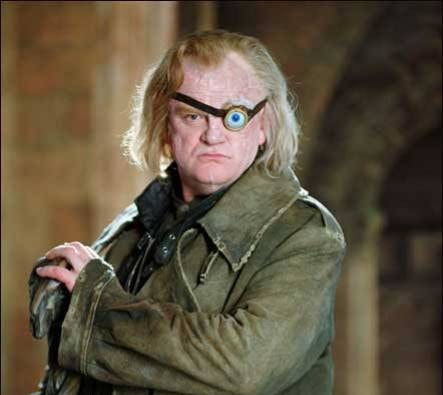
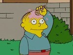
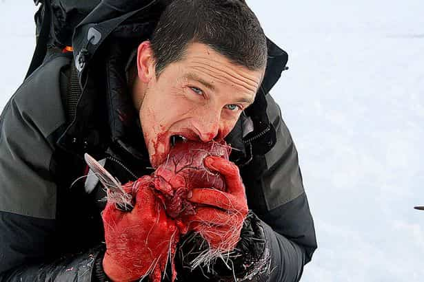

Bienvenido a la página web de la NSAA University. Aquí podras encontrar toda la información
necesaria para empezar tu carrera con nosotros. Fórmate en la universidad que tus padres siempre han
deseado para tí.
NUESTROS VALORES
- En NSAA creemos firmemente en la disciplina. Por eso, cualquier alumno
que intente salir del campus es susceptible de ser disparado por los militares que custodian
el Area 51. No más pellas sin castigo por parte del alumnado.
- Estimulación continua del alumnado mediante nuestras técnicas experimentales. En efecto, serás como un conejillo de indias en manos de nuestros científicos. La ciencia no podría estar más
orgullosa de tí.
- Autonomía: Nuestros alumnos serán más autónomos que nunca, ya que tendrán que salir a cazar y recolectar
su propia comida si no quieren sufrir de inanición. Se acabó el acomodarse a esperar que tu madre te prepare esos pesados e indigestos potajes de lentejas.
- Creemos que las habilidades sociales són un pilar fundamental en nuestra era. En consecuencia,
los estudiantes votan mensualmente si algún compañero debe abandonar el curso. Hacer amigos es más importante que nunca.
- Responsabilidad: Al inicio de cada curso se hace entrega de un tamagochi. El alumno es
responsable de que siga con vida hasta el final del mismo. En caso contrario, serás desterrado
a la intemperie hasta que consigas uno nuevo. Nunca habrás valorado tanto una vida (aunque sea
virtual).
EQUIPO DOCENTE
Nuestro equipo docente es todo un ejemplo de profesionalidad. Exhaustivamente seleccionados,
cada profesor asegura la calidad de nuestra educación.
- Ojoloco Moody

- Ralph

- Bear Grylls

 Prueba de acceso
Prueba de acceso